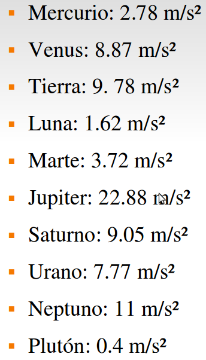

Peso en otro planeta

Recuerda que el peso y la masa de un cuerpo ¡no son lo mismo! La masa es la medida de cuánta materia hay en un objeto, y el peso es la medida de cuánta fuerza ejerce la gravedad sobre la masa de un objeto. O sea, tu masa siempre es la misma, no importa si estás en la Tierra, en la Luna o flotando en el espacio, porque la cantidad de materia de que estás hecho no cambia, pero tu peso sí depende de cuánta fuerza de gravedad esté actuando sobre ti en ese momento.